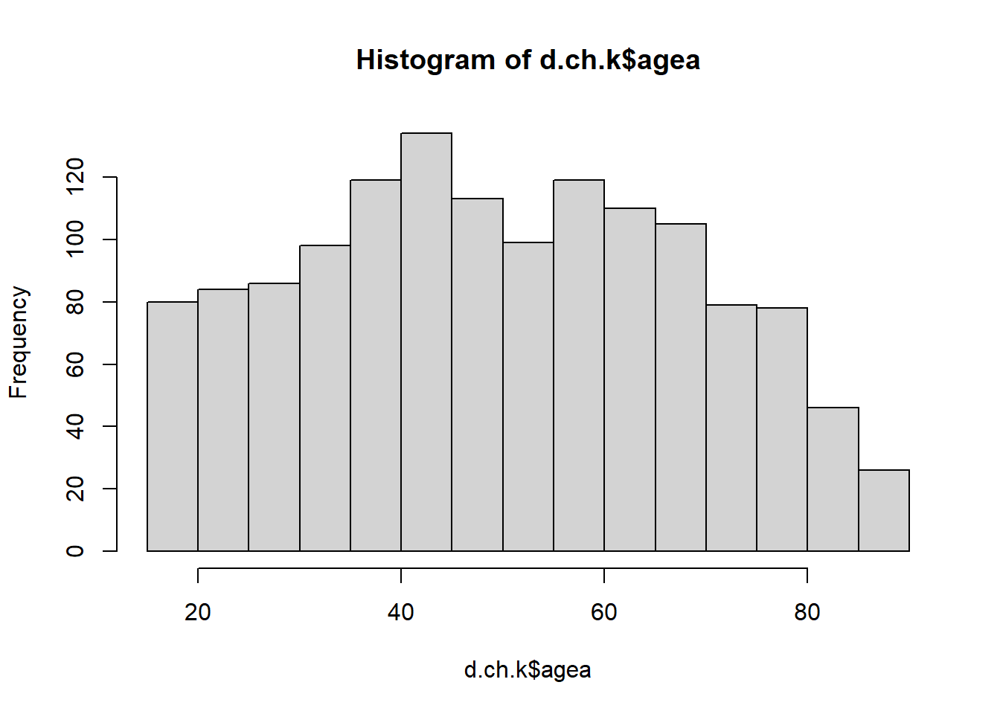

# Vorbereitung
rm(list = ls()) # Workspace loeschen
options(scipen = 999) # schaltet wissenschaftliche Schreibweise aus
d.ess <- read.csv(file = "C:/Users/BisangL/Documents/c_fuer_quarto/buch_hs26/daten/ESS11/ESS11.csv")Woche 4
Arbeiten mit Datensätzen I: Daten einlesen
Lernziele
In in den kommenden Sitzungen lernen wir statistische Analysen mit R mit “echten” Daten kennen. Dazu nutzen wir den European Social Survey (ESS) und gegebenenfalls noch weitere Datensätze. Zu Beginn der Arbeit mit einem Datensatz müssen Sie die Daten einlesen und dann erkunden. Es gilt die Variablen und ihre Ausprägungen zu verstehen, erste Plausibilitätsprüfungen durchzuführen und Daten für die spätere Analyse aufzubereiten. Diese Techniken erarbeiten Sie sich in den kommenden Wochen und schaffen damit die Grundlage für die statistische Analysen.
- Sie lesen einen CSV-Datensatz in RStudio ein.
- Sie nennen die Vor- und Nachteile des CSV-Dateiformats.
- Sie führen erste Schritte der Datenbereinigung und -plausibilisierung durch.
Aufgaben
Laden Sie den Datensatz “ESS11.csv” und das Codebook herunter (siehe OLAT) und speichern die Dateien in Ihrem Arbeitsverzeichnis. Lesen Sie anschliessend den Datensatz in RStudio ein mittels der Funktion
read.csv().Betrachten Sie den Datensatz über die Funktion
View()oder indem Sie auf das erstellte Objekt im Fenster “Environment” klicken. Suchen Sie für zwei Variablen die Fragen und Informationen im Codebook heraus und fassen Sie diese kurz zusammen.Öffnen Sie nun die Datei “ESS11.csv” in einem Tabellenkalkulations- oder einem Textbearbeitungsprogramm (z.B. Microsoft Excel, Windows-Editor oder TextEdit auf Mac).
a. Vergleichen Sie die beiden Varianten (Ihr Dataframe in RStudio und die im Textbearbeitungsprogramm geöffnete Datei) und beschreiben Sie kurz die Unterschiede.
b. Ersetzen Sie im Tabellenkalkulations- oder Textbearbeitungsprogramm die Kommas durch Strichpunkten (in Excel funktioniert das Ersetzen mit Strichpunkt nicht, falls Sie trotzdem damit arbeiten, sollten Sie es mit einem anderen Zeichen ausprobieren) und speichern Sie diese neue Version ab. Gehen Sie zurück zu R Studio und versuchen Sie, die neue Version des Datensatzes einzulesen. Welches Argument müssen Sie anpassen, damit das funktioniert?
c. Welche Vor- und Nachteile hat das CSV-Format im Vergleich zu anderen Dateiformaten (Excel, SPSS, ...)?Erkunden Sie den Datensatz mit Funktionen, die Sie bisher kennengelernt haben. Halten Sie Ihre Erkenntnisse stichwortartig fest.
Filtern Sie mittels Variable cntry, so dass nur noch Befragte aus der Schweiz enthalten sind. Verwenden Sie die Vorgehensweise, die Sie letzte Woche kennengelernt haben. Erstellen Sie mit diesen Fällen einen Teildatensatz, prüfen Sie Ihre Veränderungen und arbeiten Sie fortan mit diesem.
Wählen Sie die Variablen agea, yrbrn, ipbhprpa, fineqpy, edlvdch, eduyrs, mnactic, wkhtot, hinctnta, polintr, trstprl, prtvtdgb, stfdem, gndr, uemp3m, pdwrk und netusoft, sowie die beiden Variablen von Aufgabe 2 aus und speichern Sie diese in einem neuen Datensatz-Objekt ab. Verwenden Sie dazu die Vorgehensweise, die Sie letzte Woche kennengelernt haben. Prüfen Sie Ihre Veränderungen (wie immer!) und arbeiten Sie mit diesem Teildatensatz weiter.
Fassen Sie die Inhalte der Variablen in einer Tabelle zusammen.
Schauen Sie sich die Variable agea an.
a. Welche Umkodierung(en) müssen Sie vornehmen?
b. Welche Fehler und Probleme liegen vor? Welche Fälle sind betroffen?Reflexion (bitte betiteln Sie diesen Abschnitt auch mit “Reflexion” in Ihrem Markdown-Dokument!)
Bitte reflektieren Sie und halten stichpunktartig fest:
- Was ist Ihnen klar geworden?
- Wo sind Sie noch unsicher? Was hat noch nicht geklappt?
Lösungen
- Datensatz herunterladen und in Ordner lokal speichern, dann Datensatz einlesen
Die Funktion read.csv() hat verschiedene Argumente, wie Sie der Dokumentation (mittels ?read.csv) entnehmen können. Wir sehen, dass die Standard-Argumente (header = T, sep = "," etc.) passen und geben deshalb nur den Pfad bei Argument file ein. Insbesondere wenn Sie die Datei nicht in dem Ordner abgelegt haben, den Sie als in der ersten Sitzung als working directory (Arbeitsverzeichnis) definiert haben, gilt es als erster Schritt diesen Pfad ausfindig zu machen. Das Arbeitsverzeichnis ist der Ort auf Ihrem Rechner, wo die Daten abgelegt sind, auf die R zugreifen soll (ggfs. haben Sie diese in einem Unterordner abgelegt). Sie finden den Pfad in der Schreibweise, die R versteht, unter Tools > Global Options > Default working directory > Browse… (hier den Ordner suchen und öffnen, dann den Pfadzeile kopieren und das Fenster schliessen). Wichtig: Sie sehen hier nur Ordner, keine Dateien!
Fügen Sie dem Pfad noch den Dateinamen inklusive Endung hinzu. Schrägstriche markieren Ebenenwechsel, deshalb braucht es auch vor dem Dateinamen noch einen Schrägstrich.
Den gesamten Pfad zu nennen, ist in der Praxis vorteilhaft. Falls Sie in unterschiedlichen Projekten und Ablagen arbeiten, stellt dies sicher, dass R in den jeweils passenden Ordnern nach der Datei sucht. Es gäbe auch Alternativen: Zum Beispiel könnten Sie in einem R Project arbeiten oder nur den Dateiname nennen, wenn Sie die working directory definiert haben – dies stellt sich in der Praxis jedoch als unpraktisch heraus.
…
csv-Format
- In RStudio wird der Datensatz als übersichtliche Tabelle dargestellt, während in anderen Programmen die Daten komma-getrennt aneinandergehängt sind.
- Indem Sie die Kommas mit Strichpunkten ersetzen, ändert sich das Trennzeichen. Die
read.csv-Funktion ermöglicht über das Argumentsep =zu bestimmen, welches Zeichen die Spalten trennt. Der Standardwerte ist ein Komma. Das heisst, es ist das Argumentsep = "(hier das Zeichen anpassen)"anzupassen. - Das CSV-Dateiformat hat vor allem zwei Vorteile: Erstens – und wie in der Teilaufgabe oben deutlich wurde – können Sie über beliebige Texteditoren die Daten bearbeiten, da im Format lediglich Rohdaten in Textform abgespeichert sind. Bei anderen Dateiformaten wie etwa .sav (von der Statistiksoftware SPSS) ist dies nicht so einfach möglich. Damit ist das CSV-Format ein besonders transparenter Standard, mit dem fast alle Programme und Betriebssysteme umgehen können. Der zweite Vorteil ist, dass die CSV-Dateien nur sehr wenig Speicherplatz brauchen. Sie können somit auch grosse Datensätze schnell mit RStudio einlesen. Dem gegenüber steht der Nachteil von CSV, dass das Dateiformat keine Möglichkeiten bietet, Informationen auf komplexere Art und Weise abzuspeichern (z.B. Levels für kategoriale Variablenausprägungen, Metadaten). Zudem besteht die Gefahr, dass Sonderzeichen in den Daten zu Problemen führen oder Trennzeichen, die als Ausprägung vorkommen, ebenfalls als Spaltenumbruch gelesen werden.
Importantcsv
Das CSV-Dateiformat bietet eine sehr grundlegende Art und Weise um Daten oder eben Datensätze zu speichern. Die Fälle werden über Zeilenumbrüche getrennt. Die Spalten wiederum werden durch ein bestimmtes Zeichen voneinander abgegrenzt. Die Abkürzung bedeutet “Comma Seperated Values”, weil als Trennzeichen oftmals ein Komma eingesetzt wird.
- Beschreibung des Datensatzes:
Wir haben uns hier ein Objekt der Klasse…
class(d.ess)[1] "data.frame"geladen.
Bevor man sich mit den einzelnen Variablen beschäftigt, werden grundsätzliche Aspekte geprüft:
ImportantPlausibilisierung I: Datensatz
Plausibilisierung meint, dass wir uns die Daten erstmal genau anschauen. In einem ersten Schritt schauen wir uns das Datensatz-Objekt insgesamt an.
- Haben Sie alle Zeilen (und Spalten) eingelesen? Dies bezieht sich auf den Originaldatensatz, hier
d.ess.
dim(d.ess) # stimmt mit csv-Datei überein[1] 46162 676- Wenn Sie selbst eine Erhebung durchgeführt haben, sollten Sie sich zudem einen Überblick verschaffen, ob die Befragten Muster beim Ausfüllen des Fragebogens» angewendet haben.
Die zweite und die 22. Variablen heissen…
names(d.ess)[c(2, 22)][1] "essround" "trstprl" Die ersten fünf Variablen – alphabetisch geordnet – heissen:
sort(names(d.ess))[1:5][1] "actcomp" "actrolga" "admrclc" "aesfdrk" "agea" Die Funktion str() generiert eine Übersicht und zeigt die interne Struktur eines R-Objekts auf. Für unseren Datensatz bedeutet dies: die Variablen (auf welche wir mit $ zugreifen können), deren Dateiformat sowie die ersten Ausprägungen. Der Datensatz umfasst wenige Character-Variable und viele numerische Variablen – allerdings bricht die Auflistung aufgrund der Länge ab.
# str(d.ess)Wir reduzieren den Datensatz und kommen nachher nochmals auf beschreibende Funktionen zurück:
- filtern (Zeilen)
d.ch <- d.ess[d.ess$cntry == "CH",]
table(d.ch$cntry, useNA = "always") # prüfen
CH <NA>
1384 0 Die Tabelle zeigt, dass nur noch Fälle mit “CH”-Ausprägung enthalten sind. Fehlende Werte sind keine enthalten.
- selektieren (Spalten)
d.ch.k <- d.ch[, c("agea", "yrbrn", "ipbhprpa", "fineqpy","edlvdch", "eduyrs",
"mnactic", "wkhtot", "hinctnta", "polintr", "trstprl",
"prtvtdgb", "stfdem", "gndr", "uemp3m", "pdwrk", "netusoft")]
colnames(d.ch.k) # prüfen [1] "agea" "yrbrn" "ipbhprpa" "fineqpy" "edlvdch" "eduyrs"
[7] "mnactic" "wkhtot" "hinctnta" "polintr" "trstprl" "prtvtdgb"
[13] "stfdem" "gndr" "uemp3m" "pdwrk" "netusoft"…es sind nur noch die ausgewählten Variablen enthalten.
Diesen Datensatz schauen wir uns nochmals an:
Es gibt … Zeilen und … Spalten:
dim(d.ch.k)[1] 1384 17str(d.ch.k)'data.frame': 1384 obs. of 17 variables:
$ agea : int 66 30 47 17 28 44 79 34 52 70 ...
$ yrbrn : int 1957 1993 1976 2006 1995 1979 1944 1989 1971 1953 ...
$ ipbhprpa: int 3 2 4 1 2 3 6 2 3 1 ...
$ fineqpy : int 2 2 1 3 1 2 1 3 3 1 ...
$ edlvdch : int 13 18 22 3 17 12 12 12 12 5 ...
$ eduyrs : int 9 13 16 10 15 12 11 9 9 8 ...
$ mnactic : int 1 1 1 2 1 1 6 1 1 6 ...
$ wkhtot : int 13 60 48 666 20 42 42 45 10 42 ...
$ hinctnta: int 5 7 2 88 6 6 8 7 5 4 ...
$ polintr : int 3 2 1 3 3 3 1 3 3 2 ...
$ trstprl : int 6 7 9 7 10 4 6 8 5 6 ...
$ prtvtdgb: int NA NA NA NA NA NA NA NA NA NA ...
$ stfdem : int 6 7 10 8 10 6 7 8 7 6 ...
$ gndr : int 1 1 1 2 2 1 2 2 2 2 ...
$ uemp3m : int 1 2 2 2 2 2 2 2 2 2 ...
$ pdwrk : int 1 1 1 0 1 1 0 1 1 0 ...
$ netusoft: int 5 5 5 5 5 5 5 5 5 5 ...Alle Variablen sind als metrische Variable gespeichert, auch die Variable “gndr”. Dies sollten wir später noch anpassen. Weiter sehen wir, dass Dummy-Variablen (Variablen mit zwei Ausprägungen) zum Teil mit 1 und 2 und zum Teil mit 0 und 1 kodiert sind (z.B. pdwrk und uemp3m).
summary(d.ch.k) agea yrbrn ipbhprpa fineqpy
Min. : 15.00 Min. :1933 Min. : 1.00 Min. :1.000
1st Qu.: 35.00 1st Qu.:1958 1st Qu.: 2.00 1st Qu.:1.000
Median : 49.00 Median :1974 Median : 3.00 Median :2.000
Mean : 55.59 Mean :2006 Mean : 3.72 Mean :2.379
3rd Qu.: 65.00 3rd Qu.:1988 3rd Qu.: 4.00 3rd Qu.:3.000
Max. :999.00 Max. :7777 Max. :88.00 Max. :8.000
edlvdch eduyrs mnactic wkhtot
Min. : 1.00 Min. : 0.00 Min. : 1.000 Min. : 0.00
1st Qu.: 11.00 1st Qu.: 9.00 1st Qu.: 1.000 1st Qu.: 30.00
Median : 12.00 Median :10.00 Median : 1.000 Median : 42.00
Mean : 38.63 Mean :12.12 Mean : 3.024 Mean : 95.18
3rd Qu.: 17.00 3rd Qu.:14.00 3rd Qu.: 6.000 3rd Qu.: 47.00
Max. :8888.00 Max. :88.00 Max. :88.000 Max. :888.00
hinctnta polintr trstprl prtvtdgb
Min. : 1.00 Min. :1.000 Min. : 0.000 Min. : NA
1st Qu.: 4.00 1st Qu.:2.000 1st Qu.: 5.000 1st Qu.: NA
Median : 6.00 Median :2.000 Median : 7.000 Median : NA
Mean :16.53 Mean :2.376 Mean : 9.827 Mean :NaN
3rd Qu.: 9.00 3rd Qu.:3.000 3rd Qu.: 8.000 3rd Qu.: NA
Max. :88.00 Max. :4.000 Max. :88.000 Max. : NA
NAs :1384
stfdem gndr uemp3m pdwrk
Min. : 0.00 Min. :1.000 Min. :1.000 Min. :0.0000
1st Qu.: 7.00 1st Qu.:1.000 1st Qu.:2.000 1st Qu.:0.0000
Median : 8.00 Median :1.000 Median :2.000 Median :1.0000
Mean : 9.97 Mean :1.496 Mean :1.803 Mean :0.6214
3rd Qu.: 9.00 3rd Qu.:2.000 3rd Qu.:2.000 3rd Qu.:1.0000
Max. :88.00 Max. :2.000 Max. :8.000 Max. :1.0000
netusoft
Min. :1.000
1st Qu.:5.000
Median :5.000
Mean :4.546
3rd Qu.:5.000
Max. :5.000
Es wird deutlich, dass hier tatsächlich Rohdaten eingelesen werden: Auch fehlende Werte gelten aktuell noch als gültige Zahlen (…jemand wäre im Jahr 999 geboren – das ist Unsinn und direkt als fehlender Wert zu erkennen). Zudem ist zum Beispiel ersichtlich, dass die Variable Geschlecht ziemlich gleichmässig verteilt ist. Und wir sehen, dass die Variable prtvtdgb durchgehend NAs enthält — weshalb?
Inhalte der gewählten Variable
Variablenname Inhalt der Variable agea Age of respondent, calculated yrbrn Year of birth ipbhprpa Important to help people and care for others well-being fineqpy Making businesses pay a fine when they pay men more than women for doing the same work edlvdch Highest level of education, Switzerland eduyrs Years of full-time education completed mnactic Main activity, last 7 days wkhtot Total hours normally worked per week in main job overtime included hinctnta Household’s total net income, all sources polintr How interested in politics trstprl Trust in country’s parliament prtvtdgb Party voted for in last national election [nicht für Schweiz enthalten!] stfdem How satisfied with the way democracy works in country gndr Gender uemp3m Ever unemployed and seeking work for a period more than three months pdwrk Doing last 7 days: paid work netusoft Internet use, how often Bereinigung, Plausibilisierung und Aufbereitung am Beispiel von agea
ImportantDaten bereinigen
In dieser Phase fokussieren wir auf “technische Probleme” und Probleme, die anhand des Codebooks erkennbar sind.
- Fehlende Werte: Sind fehlende Werte in den Rohdaten enthalten? Wie sind fehlende Werte gemäss Codebuch kodiert?
- Sind die Variablen korrekt kodiert (numeric/character)?
- Bei character-Variablen, die wir für unsere Analyse brauchen, schauen wir uns an, ob Sonderzeichen, Anführungszeichen und Semikolons korrekt eingelesen wurden.
- Wie oben im str-Output gesehen, ist die Variable numerisch kodiert. Das ist sinnvoll. Gemäss summary-Output sind in agea keine
NAenthalten. Fehlende Werte sind mit999(“Not available”) kodiert und sie müssen aufNAgesetzt werden. Da es sich um eine numerisch kodierte Variable handelt, müssen Sonderzeichen nicht geprüft werden.
d.ch.k$agea[d.ch.k$agea == 999] <- NA
table(d.ch.k$agea, useNA = "always") # prüfen
15 16 17 18 19 20 21 22 23 24 25 26 27 28 29 30
2 16 13 18 18 13 17 19 12 18 18 13 18 10 18 27
31 32 33 34 35 36 37 38 39 40 41 42 43 44 45 46
19 14 15 29 21 27 11 28 23 30 24 29 31 23 27 21
47 48 49 50 51 52 53 54 55 56 57 58 59 60 61 62
25 20 26 21 24 23 22 15 15 24 29 27 21 18 19 19
63 64 65 66 67 68 69 70 71 72 73 74 75 76 77 78
25 26 21 22 14 22 24 23 14 15 18 15 17 20 16 18
79 80 81 82 83 84 85 86 87 88 89 90 <NA>
8 16 8 10 14 7 7 2 5 2 3 14 8
ImportantPlausibilsierung II: Fehler, Unstimmigkeiten und Unsicherheiten in Variablen suchen
Wir schauen uns univariat Auffälligkeiten, Ausreisser und Extremwerte an.
Anschliessend prüfen wir, ob Inkonsistenzen vorliegen und machen «Querchecks» mittels bivariaten Tabellen, Masszahlen und Darstellungen (logische Überlegungen!). Hier können wir unter Umständen auch externe Informationen hinzuziehen.
Wir schauen nun nach Auffälligkeiten, Ausreissern und Extremwerten:
range(d.ch.k$agea, na.rm = T)[1] 15 90hist(d.ch.k$agea)
…15 bis 90 Jahre macht nun Sinn, zumal gemäss Informationen zum European Social Survey nur Personen ab 15 Jahre befragt werden (siehe hier, Abschnitt “Universe, scope and method”) und die Verteilung ist so erwartbar.
- Inkonsistenzen? Das Alter sollte sich aus dem Jahrgang und Jahr der Befragung ableiten lassen. Das ist nicht in allen Fällen so:
which(d.ch.k$agea != 2023 - d.ch.k$yrbrn) [1] 116 284 445 491 499 508 515 517 600 617 670 673 681 743 916
[16] 959 1102 1132 1136 1149 1288 1326# Differenz berechnen
2023 - d.ch.k$yrbrn[d.ch.k$agea != 2023 - d.ch.k$yrbrn] - d.ch.k$agea[d.ch.k$agea != 2023 - d.ch.k$yrbrn] [1] NA -1 -1 NA -1 NA -1 -1 NA -1 -1 -1 -1 -1 -1 -1 -1 NA -1 -1 -1 NA -1 NA -1
[26] -1 -1 NA -1 -1# betroffene Fälle anschauen
d.ch.k[d.ch.k$agea != 2023 - d.ch.k$yrbrn, c("agea", "yrbrn")] agea yrbrn
NA NA NA
6303 51 1973
6471 32 1992
NA.1 NA NA
6632 34 1990
NA.2 NA NA
6678 24 2000
6686 58 1966
NA.3 NA NA
6695 48 1976
6702 34 1990
6704 66 1958
6787 77 1947
6804 59 1965
6857 39 1985
6860 90 1934
6868 51 1973
NA.4 NA NA
6930 54 1970
7103 29 1995
7146 66 1958
NA.5 NA NA
7289 29 1995
NA.6 NA NA
7319 57 1967
7323 35 1989
7336 66 1958
NA.7 NA NA
7475 41 1983
7513 47 1977Da die Differenzen durchgehend -1 betragen, scheint ein systematisches Problem vorzuliegen. Es gibt im Wesentlichen vier Arten damit umzugehen:
ImportantUmgang mit
NA
Wir können die benötigten Werte ableiten, etwa bei den Altersvariablen – allerdings ist oftmals unklar, welcher Wert falsch ist, deshalb werden fehlende Werte selten ergänzt.
Wir können die Werte schätzen. Es gibt unterschiedlich elaborierte Schätzverfahren. Grundsätzlich ist jedoch davon abzuraten, weil oftmals die Transparenz fehlt und Verzerrungen in den Daten verstärkt werden können.
Wir könnten den ganzen Fall löschen – das macht man in der Praxis äusserst selten, weil damit viele Datenpunkte verloren gehen würden.
Wir können die Werte als
NAdefinieren. Das ist das übliche Vorgehen.
Hier setzen wir diese Fälle in beiden Variablen auf NA und prüfen die Veränderung.
v.age <- which(d.ch.k$agea != 2023 - d.ch.k$yrbrn)
d.ch.k$agea[v.age] <- NA
table(d.ch.k$agea, useNA = "always")
15 16 17 18 19 20 21 22 23 24 25 26 27 28 29 30
2 16 13 18 18 13 17 19 12 17 18 13 18 10 16 27
31 32 33 34 35 36 37 38 39 40 41 42 43 44 45 46
19 13 15 27 20 27 11 28 22 30 23 29 31 23 27 21
47 48 49 50 51 52 53 54 55 56 57 58 59 60 61 62
24 19 26 21 22 23 22 14 15 24 28 26 20 18 19 19
63 64 65 66 67 68 69 70 71 72 73 74 75 76 77 78
25 26 21 19 14 22 24 23 14 15 18 15 17 20 15 18
79 80 81 82 83 84 85 86 87 88 89 90 <NA>
8 16 8 10 14 7 7 2 5 2 3 13 30 d.ch.k$yrbrn[v.age] <- NA
table(d.ch.k$yrbrn, useNA = "always") # das stimmt
1933 1934 1935 1936 1937 1938 1939 1940 1941 1942 1943 1944 1945 1946 1947 1948
13 3 2 5 2 7 7 14 10 8 16 8 18 15 20 17
1949 1950 1951 1952 1953 1954 1955 1956 1957 1958 1959 1960 1961 1962 1963 1964
15 18 15 14 23 24 22 14 19 21 26 25 19 19 18 20
1965 1966 1967 1968 1969 1970 1971 1972 1973 1974 1975 1976 1977 1978 1979 1980
26 28 24 15 14 22 23 22 21 26 19 24 21 27 23 31
1981 1982 1983 1984 1985 1986 1987 1988 1989 1990 1991 1992 1993 1994 1995 1996
29 23 30 22 28 11 27 20 27 15 13 19 27 16 10 18
1997 1998 1999 2000 2001 2002 2003 2004 2005 2006 2007 2008 7777 <NA>
13 18 17 12 19 17 13 18 18 13 16 2 8 22